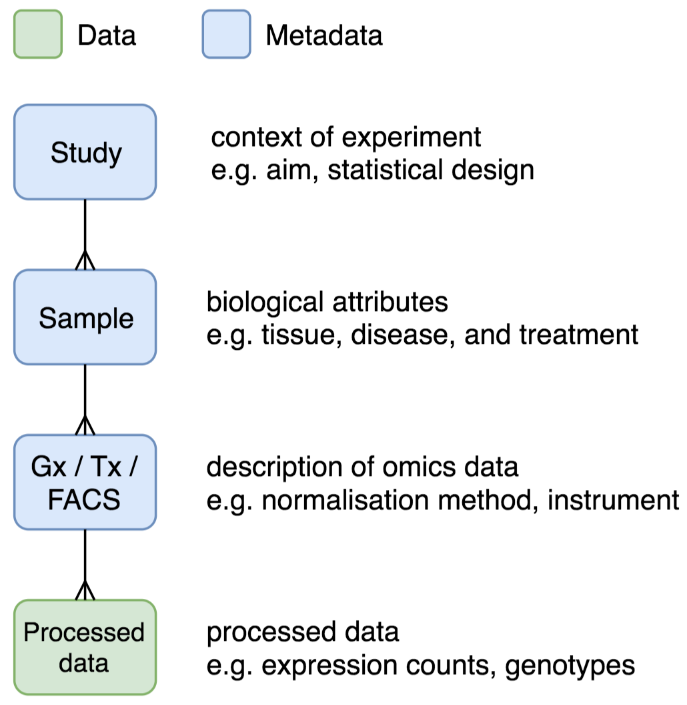
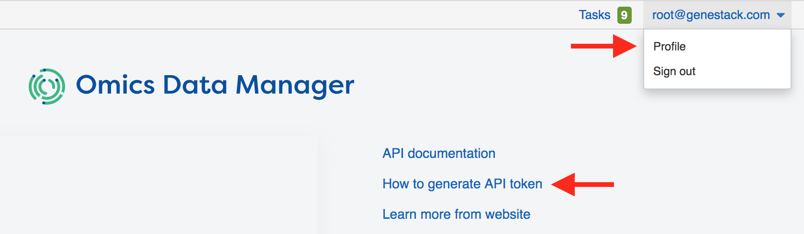
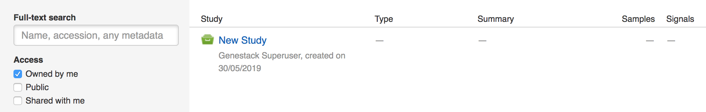
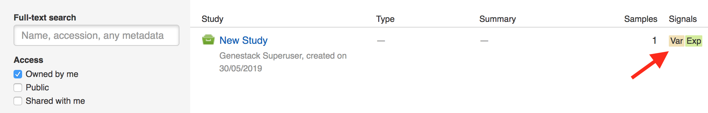

Import Data Using API¶
How can I import data to ODM?¶
On this page, you will find a brief explanation about data import via APIs, followed by a step-by-step example that you can try. Please note that you need to be a member of the curator group in ODM to be able to import and edit data in ODM.
What can I import?¶
You can import studies, samples, and signals:
Study: the context of an experiment, such as the aim and statistical design.
Sample: the biological attributes of a sample, such as tissue, disease, and treatment.
Signal: expression, variant, or flow cytometry data. You can import the metadata (e.g. genome version, normalization method, and the locations of raw/processed data in your storage) together with the processed data (e.g. expression counts, genotypes).
Once imported, studies, samples, and signal metadata will be queryable and editable from both the User Interface and APIs, whilst the signal data will only queryable via APIs.
The accepted file formats will be described in the step-by-step example.
Can I capture the relationships between studies, samples, and signals?¶
Data import has two stages. First, you create studies, samples, and signals separately. Then, you can link them together: a study can be linked to multiple samples and a sample can be linked to multi-omics signals. Below are the data model and how it looks in the User Interface:
{kind=link}

Where can I import the data from?¶
You should provide HTTP/FTP file links (which can include authentication credentials) to a storage that’s accessible by ODM. File uploads from a local computer will be supported in a future release.
Step-by-step example¶
As an example, we will import tiny data subsets from the 1000 Genomes Project, consisting of the following files:
Test_1000g.study.tsv, a tab-delimited file of the study attributes
Study Source |
Study Description |
Target Disease |
|---|---|---|
1000 Genomes Project |
Subset of 1000 Genomes Project |
Healthy |
Test_1000g.samples.tsv, a tab-delimited file of sample attributes.
Study Source |
Sample Source ID | Species |
Sex | Population |
||
|---|---|---|---|---|
1000 Genomes Project |
HG00119 | Homo sapiens |
M | British |
||
1001 Genomes Project |
HG00121 | Homo sapiens |
F | British |
||
1002 Genomes Project |
HG00183 | Homo sapiens |
M | Finnish |
||
1003 Genomes Project |
HG00176 | Homo sapiens |
F | Finnish |
||
Test_1000g.gct, a GCT file of expression data from multiple sequencing runs
Name |
Description |
HG00119 |
HG00121 |
HG00183 |
HG00176 |
|---|---|---|---|---|---|
ENSG00000077044 |
14.7 |
16.8 |
17.2 |
19.5 |
|
ENSG00000085982 |
4.2 |
7.1 |
5.5 |
6.8 |
Test_1000g.gct.tsv, a tab-separated file that describes the expression data
Expression Source |
Normalization Method | Genome Version |
|
|---|---|---|
1000 Genomes Project |
RPKM | GRCh38.91 |
|
Test_1000g.vcf, a VCF file of variant data from multiple sequencing runs
#CHROM |
POS |
ID |
REF |
ALT |
QUAL |
FILTER |
INFO |
FORMAT |
HG00119 |
HG00121 |
HG00183 |
HG00176 |
|---|---|---|---|---|---|---|---|---|---|---|---|---|
2 |
233364596 |
rs838705 |
G |
A |
100 | PASS |
AF=0.64 |
GT |
0|0 |
0|1 |
1|0 |
1|1 |
|
2 |
233385915 |
rs201966773 |
T |
TTC |
987 | PASS |
AF=0.86 |
GT |
0|0 |
0|1 |
1|1 |
1|1 |
|
Test_1000g.vcf.tsv, a tab-separated file that describes the variant data
Variant Source |
Genome Version |
|---|---|
1000 Genomes Project |
GRCh38.91 |
We will go through the following steps:
Generate an API token
Import a study
Import samples
Link samples to study
Import and link expression data to samples
Import and link variant data to samples
Check that you can query the relationships between objects
Generate an API token
When using the APIs, you need to provide an API token for authentication. You can generate this by going to your profile, which can be found by clicking your username at the top right corner of the User Interface, or from the Dashboard
The API token is permanent — there is no expiration date. However, you can revoke it at any time and have multiple tokens.
Import a study
There are specific endpoints to import specific data types, as listed in the Swagger API documentation. For studies, you should go to the studyCurator endpoint, use the POST method, and supply the file URL:
curl -H "Genestack-API-Token: <your API token>" -H "Content-Type: application/json" -H "Accept: application/json" -X POST -d '{"link":"https://s3.amazonaws.com/bio-test-data/odm/Test_1000g/Test_1000g.study.tsv"}' https://occam.genestack.com/frontend/rs/genestack/studyCurator/v0.1/studies
If successful, you should see the accession and metadata of the created study in the response. You should also see some warnings because some of the required attributes from the default metadata template are missing or incorrect:
{
"warnings": [
"The value for required attribute \"Study Source ID\" is not present",
"The value for required attribute \"Study Type\" is not present"
],
"data": {
"genestack:accession": "GSF282799",
"Study Source": "1000 Genomes Project",
"Study Source ID": null,
"Study Description": "Subset of 1000 Genomes Project",
"Study Type": null,
"Study Design": null,
"Therapeutic Area": null,
"Contributor": null,
"Contributor Email": null,
"Release Date": null,
"Last Update Date": null,
"Raw Data Files": null,
"Processed Data Files": null,
"Processed Data Matrix Files": null,
"Import Source URL": null,
"Database Source URL": null,
"Study Title": "New Study",
"Target Disease": "Healthy"
}
}
You can also confirm this visually, by going to the Study Browser and check that a new study has been created, owned by you:
To import samples, you should use a different endpoint, sampleCurator:
curl -H "Genestack-API-Token: <your API token>" -H "Content-Type: application/json" -H "Accept: application/json" -X POST -d '{"link":"https://s3.amazonaws.com/bio-test-data/odm/Test_1000g/Test_1000g.samples.tsv"}' https://occam.genestack.com/frontend/rs/genestack/sampleCurator/v0.1/samples
Similar to the previous step, you should see the accession and metadata of the created samples in the response — a list of four objects this time, rather than just one object:
[
{
"warnings": [
"The value \"M\" for attribute \"Sex\" is a synonym in the controlled vocabulary \"GSF000071\". Did you mean one of [male]?"
],
"data": {
"genestack:accession": "GSF282801",
"Sample Source ID": "HG00119",
"Sample Name": null,
"Organism": null,
"Sex": "M",
"Disease": null,
"Cell Line": null,
"Cell Type": null,
"Tissue": null,
"Sampling Site": null,
"Age": null,
"Compound": null,
"Compound Dose": null,
"Compound Dose Unit": null,
"Raw Data Files": null,
"Processed Data Files": null,
"Import Source URL": null,
"Sample Source": "1000 Genomes Project",
"Population": "British",
"Species": "Homo sapiens"
}
},
… <three more sample objects here> …
]
However, you won’t see the samples in the Study Browser yet, because no samples have been linked to the study.
Link samples to study
You can link samples to study using the integration endpoint, specifying the accessions of the pair of objects to be linked. The following call will link one of the samples (sample HG00119 with accession GSF282801) to the study (with accession GSF282799):
curl -H "Genestack-API-Token: <your API token>" -H "Content-Type: application/json" -H "Accept: application/json" -X POST https://occam.genestack.com/frontend/rs/genestack/integrationCurator/v0.1/integration/link/sample/GSF282801/to/study/GSF282799
If successful, in the Study Browser you should see (after refreshing the page) that the number of samples next to your study has changed from ‘-’ to ‘1’:

You can link the other samples in the same way. In practice, we’d create a script to automate this process, using common sample IDs.
Import and link expression data to samples
This time, we’re going to import expression data, supplying two files, one for the metadata, and another for the processed data:
curl -H "Genestack-API-Token: <your API token>" -H "Content-Type: application/json" -H "Accept: application/json" -X POST -d '{"link":"https://s3.amazonaws.com/bio-test-data/odm/Test_1000g/Test_1000g.gct", "metadataLink":"https://s3.amazonaws.com/bio-test-data/odm/Test_1000g/Test_1000g.gct.tsv"}' https://occam.genestack.com/frontend/rs/genestack/expressionCurator/v0.1/expression/gct
If successful, you will get four run-level expression objects, corresponding to the four columns in the expression matrix:
{
"runs": [
{
"genestack:accession": "GSF282812",
"Sample Source ID": "HG00119"
},
{
"genestack:accession": "GSF282813",
"Sample Source ID": "HG00121"
},
{
"genestack:accession": "GSF282814",
"Sample Source ID": "HG00183"
},
{
"genestack:accession": "GSF282815",
"Sample Source ID": "HG00176"
}
],
"experiment": "GSF282811",
"warnings": []
}
You can then link these run-level expression objects to the corresponding samples. The call below will link the expression object GSF282812 to the sample HG00119 (that’s been linked to the study in the previous step):
curl -H "Genestack-API-Token: <your API token>" -H "Content-Type: application/json" -H "Accept: application/json" -X POST https://occam.genestack.com/frontend/rs/genestack/integrationCurator/v0.1/integration/link/expression/GSF282812/to/sample/GSF282801
If successful, in the Study Browser you should see (after refreshing the page) that the Signals of your study has changed from ‘-’ to ‘Exp’.

Import and link variant data to samples
Let’s repeat the previous step. This time, for variant data, so that the same sample (HG00119) is linked to both expression and variant data.
To import the variant data:
curl -H "Genestack-API-Token: <your API token>" -H "Content-Type: application/json" -H "Accept: application/json" -X POST -d '{"link":"https://s3.amazonaws.com/bio-test-data/Demo/Test_1000g/Test_1000g.vcf", "metadataLink":"https://s3.amazonaws.com/bio-test-data/odm/Test_1000g/Test_1000g.vcf.tsv"}' https://occam.genestack.com/frontend/rs/genestack/variantCurator/v0.1/variant/vcf
Which should give you four run-level variant objects, corresponding to the four sample columns in the VCF file:
{
"runs": [
{
"genestack:accession": "GSF282825",
"Sample Source ID": "HG00119"
},
{
"genestack:accession": "GSF282826",
"Sample Source ID": "HG00121"
},
{
"genestack:accession": "GSF282827",
"Sample Source ID": "HG00183"
},
{
"genestack:accession": "GSF282828",
"Sample Source ID": "HG00176"
}
],
"experiment": "GSF282824",
"warnings": []
}
To link the variant object GSF282825 with the sample HG00119:
curl -H "Genestack-API-Token: <your API token>" -H "Content-Type: application/json" -H "Accept: application/json" -X POST https://occam.genestack.com/frontend/rs/genestack/integrationCurator/v0.1/integration/link/variant/GSF282825/to/sample/GSF282801
Check in the Study Browser that you see both expression and variant signals next to your imported study:
Check that you can query the relationships between objects
Once you’ve created and linked the study, sample, expression, and variant objects, you can do integration-aware query via both the User Interface and APIs.
In the User Interface, you should be able to find your imported study using the study, sample, and signal filters:

To do this via APIs, you can use the integration/omics endpoint to filter across studies, samples, and signals, and retrieve a specific object type. For example, to get the expression of gene ENSG00000077044 from the sample GSF282801:
curl -H "Genestack-API-Token: <your API token>" -H "Content-Type: application/json" -H "Accept: application/json" -X GET "https://occam.genestack.com/frontend/rs/genestack/integrationCurator/v0.1/omics/expression/data?sampleFilter=genestack:accession=GSF282801&exQuery=Gene=ENSG00000077044"
Which will return:
{
"data": [
{
"itemId": null,
"metadata": null,
"gene": "ENSG00000077044",
"expression": 14.74187,
"description": null,
"relationships": {
"sample": "GSF282801"
}
}
]
}